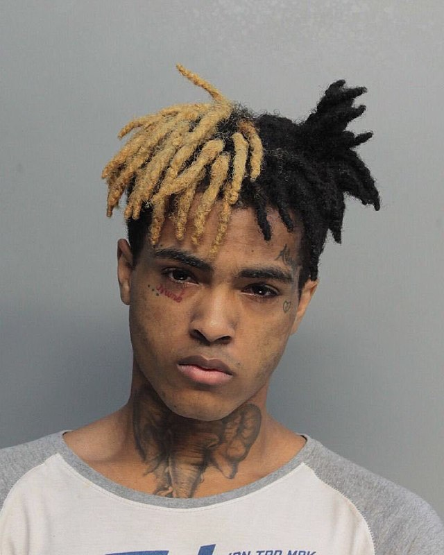

Джасей Двейн Онфрой (англ. Jahseh Dwayne Onfroy; 23 січня 1998, Плантейшн, Флорида — 18 червня 2018, Дірфілд-Біч, Флорида), відомий під псевдонімом XXXTentacion (вимовляється як укр. Екс-екс-екс Тентасьйон) — американський репер, рокер співак та автор пісень з міста Лодергілл, Флорида. 2013 року почав викладати музику на платформу SoundCloud.[4][5][6] Став різко набувати популярності на початку 2016 року завдяки конфлікту з репером Drake, який використав без дозволу його трек під назвою «Look At Me!». Вважався першопрохідцем саунд-клауд репу[en], суміші Lo-Fi музики, трепу та хіп-хопу.[7][8][9] Його дебютний альбом — «17»[en] — побачив світ 25 серпня 2017 року та посів другу сходинку на Billboard 200.[10][11] Сингл з альбому — «Jocelyn Flores» — посів дев'ятнадцяте місце на Billboard Hot 100.[12] 16 березня 2018 року вийшов його другий альбом — «? (question mark)»[13], пісня з якого — «SAD!» — зайняла найвищу в історії кар'єри Джасея позицію, зайнявши сьому сходинку в чарті Billboard Hot 100 за два тижні після виходу та перемістившись на першу після смерті виконавця[14], та набрала понад 980 мільйонів переглядів на YouTube.
Розпочав свою музичну кар'єру 2013 року, повернувшись з-під ув'язнення у виховній колонії, куди потрапив за володіння зброєю. Опублікував свій перший трек — «News/Flock» (наразі видалений самим виконавцем) — на платформі SoundCloud. За ґратами познайомився та потоваришував зі Стоуклі Клевоном Голборном,[27] який більш відомий під псевдонімом Ski Mask The Slump God. На волі XXXTentacion приєднався до реп-гурту Very Rare, який створив Ski Mask The Slump God, а згодом навпаки — Стоуклі долучився до гурту Members Only, який створив XXXTentacion. 21 листопада 2014 року Онфрой видав свій дебютний мініальбом «The Fall».[28] У 2016 світ побачив ще один мініальбом «Willy Wonka Was a Child Murderer», на створення якого Джасея надихнув важкий метал та інді музика. Репер залишив свою роботу у кол-центрі, адже його музична кар'єра стрімко пішла вгору. Згодом він перевидав трек «Look at Me»[en], який, зрештою, посів тридцять четверту сходинку на Billboard Hot 100.[29] Канадського репера на ім'я Drake звинуватили у використанні схожого флоу у ще не випущеній пісні «KMT» (до офіційного виходу Drake виконав трек на концерті в Амстердамі).[30][31] 18 квітня 2017 року завантажив три нових треки на SoundCloud,[32] а 16 травня 2017 року світ побачив мікстейп «Revenge», який містив вісім раніше випущених пісень.[33] 25 серпня 2017 року вийшов його дебютний альбом — «17»[en],[34] який посів 7 сходинку на Billboard 200. 17 листопада Онфрой повідомив про скорий вихід другого студійного альбому — «Bad Vibes Forever». 11 грудня 2017 року світ побачив мініальбом під назвою «A Ghetto Christmas Carol»,[35] а 14 грудня 2017 року Онфроя знову тимчасово взяли під арешт за порушення правил застави.[36] У грудні 2017 року Джасей розповів, що планує випустити ще 3 нових альбоми в найближчий час, та зауважив, що вони будуть різножанрові[37]. 21 лютого 2018 року XXXTentacion випустив сингл «HOPE», що присвячений стрілянині у школі Паркленд. 2 березня 2018 року X випустив перші дві пісні з альбому «? (question mark)». Перша пісня має назву «SAD!», друга — «changes».16 березня 2018 року XXXTentacion повністю випустив альбом «? (question mark)», який складається з 17 треків, якщо не брати до уваги передмову. 31 березня 2018 року альбом дебютував на першій позиції у хіт-параді Billboard Top 200[38]. 6 жовтня 2018 року XXXTentacion'а посмертно номіновано на премію «2018 BET Hip Hop Awards», в якій репер здобув перемогу в номінації «Найкращий новий хіп-хоп артист».[39] У грудні 2018 року світ побачив його третій студійний альбом «Skins», виданий посмертно. 6 грудня 2019 року XXXtentacion випустив другий і водночас останній посмертний альбом «Bad Vibes Forever».